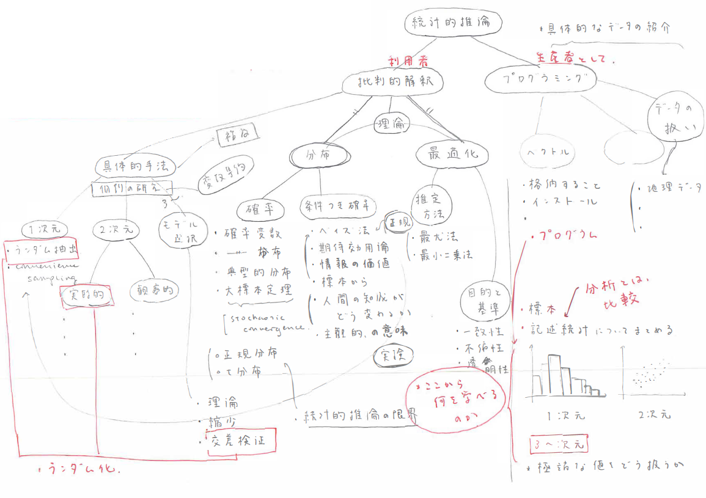

統計概論再考: 理論と実践
目指すもの
データ保存・計算の飛躍的な技術革新を背景とし、データ分析を体系的に理解・実践する知識・技能の社会的意義が高まっている。本講義「ミクロ・データサイエンス」は、以下の二つのことを目的としている。
社会経済の理解の基盤となるデータ分析について、批判的に吟味できること (すなわち、結論を無批判・無反省に受け入れるのではなく、その仮定に気づき吟味できること)
日進月歩のプログラミング環境の中でも、その根本にある基礎概念は普遍的である。実際に経験することでそれらを学び、プログラミングをこれから独立して学び続けていくための知識・技能を体得すること
全体像 
どう学ぶか
講義ビデオを確認できるため、ノートを自分で取ることの意義を見出しづらいかもしれない。しかし、本講義で用いている数式を理解するため、こつこつ自分の手でノートを取って考えて行こう。
- 講義ビデオが長くなってしまうときについては、特に重要な内容に*をつけて強調している
- 講義では、自分でも気づかず「言い間違い」をしてしまうことがある。「あれ？」と思ったら、連絡をしてほしい